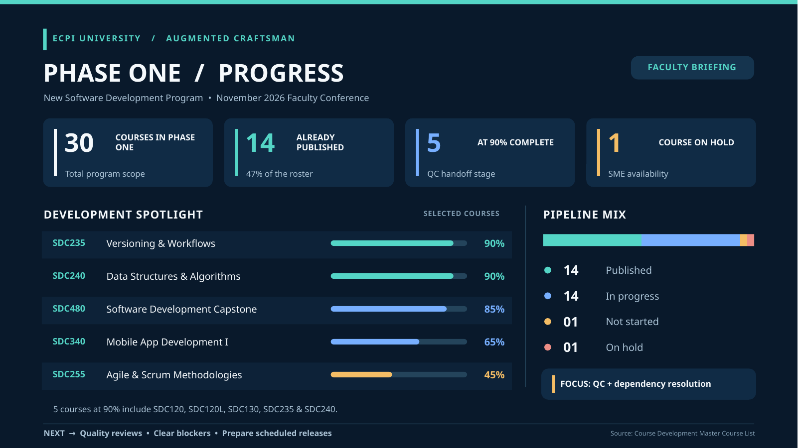
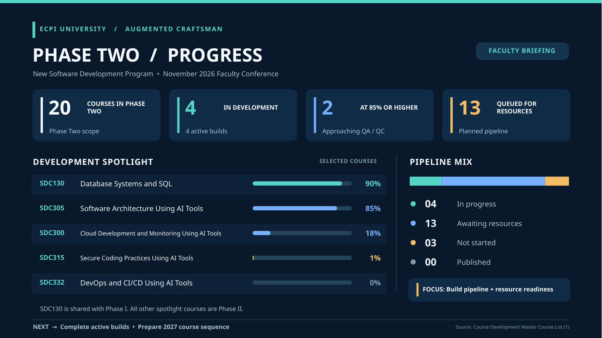

01
AI changes the workflow.
AI-assisted tools are changing how developers approach design, code, and iteration.
A future-ready software development program
The Augmented Craftsman Model
Preserving the craft. Embracing the tools.
Preparing the next generation.
November 2026 / Faculty Conference
Human craft, strengthened by the right tools.
01 / The case for change
Software development education must evolve with the profession.
AI-assisted tools are changing how developers approach design, code, and iteration.
Students need to reason about solutions, weigh trade-offs, and solve real problems.
Modern software brings collaboration, version control, testing, and automation together.
The goal is not simply to teach students new tools.It is to develop stronger software developers.
02 / Educational philosophy
AI can extend capability; the developer remains responsible for the work.
Human judgment leads. Tools extend what a developer can do.
Understand the systems we build.
Frame problems and weigh trade-offs.
Write clear, maintainable software.
Use assistance with discernment and accountability.
Build through shared development workflows.
Adapt as tools, teams, and needs change.
AI augments developer judgment. It does not replace it.
03 / Learning experience
A practical pathway connects tools, disciplined practice, and student judgment.
Practice using AI throughout the development process.
Build fluency with Git and shared workflows.
Connect automation, testing, and delivery.
Learn by creating, reviewing, and refining.
Integrate industry certifications into the educational pathway.
Pair creativity with sound technical judgment.
A proposed learning direction; specific curriculum and certification requirements remain subject to review.


04 / Next steps
A sequence of milestones, with timing set as work and resources are confirmed.
Create course content and learning activities.
Strengthen accuracy, clarity, and instruction.
Align on course goals and teaching practice.
Bring reviewed courses into the pathway.
Use feedback to guide continuous improvement.
A deliberate, phased approach to building a sustainable modern software development program.
SEQUENCE SHOWN / NO MILESTONE DATES ASSERTED
05 / Faculty partnership
This transformation is about more than new courses or technologies. It is about equipping students with the judgment, confidence, craftsmanship, and adaptability to succeed in an evolving profession.
Bring instructional insight and practical experience.
Contribute to course review and ongoing improvement.
Help students pair new technical skills with professional discernment.
“The future of software development is not AI versus developers.
It is better developers, augmented by AI.”
Discussion